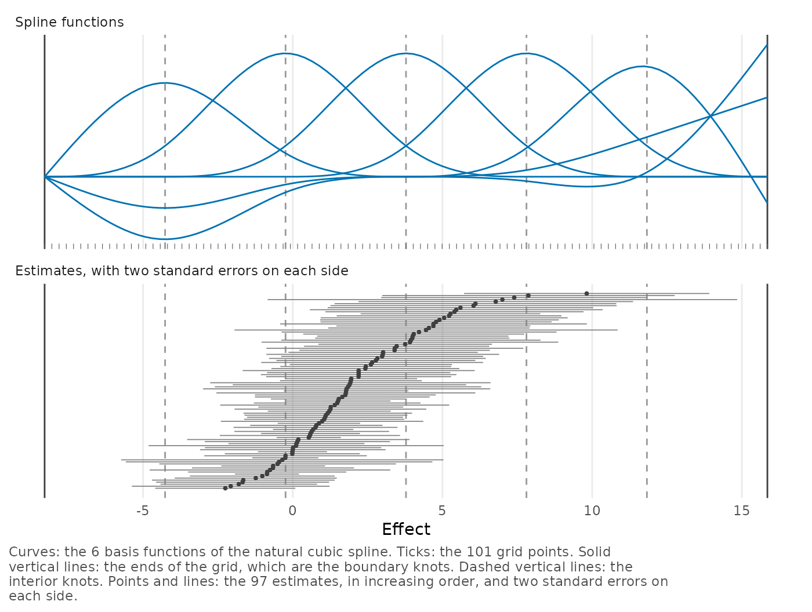
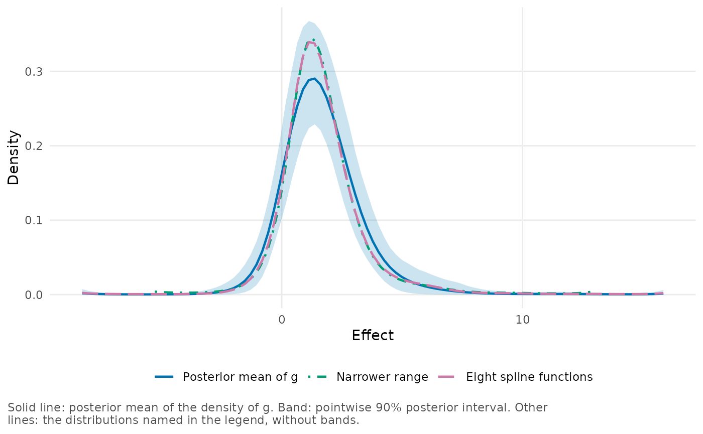

Choosing the grid and checking sensitivity to it
Source:vignettes/choosing-a-grid.Rmd
choosing-a-grid.RmdThis vignette is about the grid on which bayesEfron estimates the distribution of effects, \(g\). We describe the choices that define the grid and what the defaults do, and then show how to check its range after a fit, how to set it yourself, and how to find out whether your results are sensitive to it.
A normal random-effects model has two parameters for the distribution of effects, and the analyst’s assumptions enter through their prior distributions. The model in bayesEfron has no such parameters. It describes \(g\) by its probabilities on the grid, so the assumptions enter through the grid instead: where it begins and ends, how many points it has, what is placed at each point, and how many spline functions shape the probabilities.
The defaults are chosen so that you can fit the model without making any of these decisions. They are decisions all the same, and with few sites the results can depend on them.
The four choices that define a grid
The first choice is the range. When the grid carries point masses, which is the default, an effect cannot take a value outside the grid. A range that is too narrow cuts off the tails of \(g\) and pins the effects of extreme sites at its ends.
The range also sets the scale of the prior distribution, a less obvious consequence of the same choice. Because the prior on the spline coefficients is centered at zero, where every grid point has the same probability, \(g\) is spread over the whole grid before we see the data. A uniform distribution has a standard deviation of 0.29 times its width, and the prior distribution of the standard deviation of \(g\) is centered close to that value whatever grid is used.
We can check this with the three fits stored in the package:
krw_fit for the callback gaps at 97 firms,
raudenbush_fit for 19 studies of teacher expectancy, and
twin_towers_fit for 1,500 simulated sites. For each fit we
take the prior median and the posterior mean of the standard deviation
of \(g\) from diagnose()
and set them beside the width of the grid.
fits <- list("97 firms" = krw_fit, "19 studies" = raudenbush_fit,
"1,500 simulated sites" = twin_towers_fit)
scale_of_prior <- do.call(rbind, lapply(names(fits), function(name) {
grid <- diagnose(fits[[name]])$grid
ends <- range(fits[[name]]$metadata$data_list$grid)
data.frame(data = name, width = diff(ends),
prior_median = grid$sd_g_prior[["q50"]],
posterior_mean = grid$sd_g[["mean"]])
}))
scale_of_prior$prior_over_width <- scale_of_prior$prior_median / scale_of_prior$width
scale_of_prior[-1] <- signif(scale_of_prior[-1], 3)
scale_of_prior
#> data width prior_median posterior_mean prior_over_width
#> 1 97 firms 0.241 0.0699 0.0172 0.290
#> 2 19 studies 3.000 0.8690 0.3120 0.290
#> 3 1,500 simulated sites 6.680 1.9300 1.4700 0.289As the last column shows, a grid twice as wide starts from a standard deviation twice as large. When there are many sites the data dominate the prior, but when there are few they do so only in part, and the last section shows the consequence.
The second choice is the number of grid points, L, which
sets how finely the grid resolves the effects. A site’s likelihood is
evaluated at the grid points, so a standard error much smaller than the
grid spacing is represented poorly. A grid with only a few points across
the bulk of the effects also cannot show the shape of \(g\).
The third choice is what is placed at each grid point. By default it
is a point mass, which is the model of Lee and
Sui (2025). If you set
component = "normal", each grid point carries a normal
distribution with a standard deviation that is a fraction of the grid
spacing, as in the penalized Gaussian mixture of Sui and Tipton (2026). In that case \(g\) is a smooth density and extends a
little beyond the limits of the grid.
The fourth choice is flexibility. The log probabilities are a
combination of M natural cubic spline functions (Efron 2016) with
knots equally spaced over the grid, and more functions allow narrower
features. The knots follow the grid, whatever the data are, so a range
much wider than the effects puts knots where there is nothing to
describe.
The default grid
make_efron_grid() builds the grid that a fit would use.
Its default method for the range runs a short preliminary fit and needs
CmdStan, so here we use "paper_realdata", which needs no
fit. This is the method used in the code that accompanies Lee and Sui (2025):
the range of the estimates, extended by half its width on each side. We
build this grid for the 97 firms and print it.
grid <- make_efron_grid(krw_discrimination, grid_method = "paper_realdata")
grid
#> <bef_grid> 101 points from -0.0829 to 0.159, spacing 0.00241
#> Rule: "paper_realdata", expansion 0.5
#> Component: point masses
#> Basis: 6 natural cubic spline functions, knots by rule "grid"
#> Interior knots: -0.0427, -0.00242, 0.0378, 0.0781, 0.118
#> Resolution: smallest standard error 2.21 spacings, scale of the effects 7.89 spacings
#> 50.5% of the grid points lie outside the range of the estimatesThe printed grid shows what was chosen, and its Rule
line names the method for the range. (In a printed grid, “rule” means
the method for the range and “end” means a limit of the grid.) Next we
plot the grid against the data, in percentage points
(scale = 100).
plot(grid, scale = 100)
The curves are the spline functions, the dashed lines the interior knots, and the solid lines the limits of the grid. Below them, on the same axis, each estimate is plotted with 2 standard errors on each side. Half of the grid points lie beyond the smallest and the largest estimate, which is the room that this method leaves for effects more extreme than any estimate.
That is too much room when there are many sites. The estimates are
more spread out than the effects, and the grid is twice as wide as the
range of the estimates, so \(g\) ends
up in a small part of the grid, with most of the knots outside it. The
default method, grid_method = "pilot", therefore takes a
second step. It fits the model briefly on this wide range (the pilot
fit), finds the interval that contains the central 99.9% of the
resulting estimate of \(g\), extends it
on each side by a margin of 10% of its width, and uses the result if it
is narrower. It never widens the range. If an estimate lies more than 4
of its standard errors outside a new limit, that limit is moved back out
to include it.
A fit records what the method did. For the 97 firms, and for the 19
studies analyzed in vignette("teacher-expectancy"), it left
the range as it was. For the 1,500 simulated sites of
vignette("twin-towers"), it narrowed the range to 30% of
its width, as the Rule line of that fit’s stored grid
shows.
attr(twin_towers_fit$metadata, "grid")
#> <bef_grid> 101 points from -3 to 3.67, spacing 0.0668
#> Rule: "pilot", expansion 0.5, margin 0.1: narrowed to 30% of the range of "paper_realdata"
#> Component: point masses
#> Basis: 8 natural cubic spline functions, knots by rule "grid"
#> Interior knots: -2.17, -1.33, -0.499, 0.335, 1.17, 2, 2.84
#> Resolution: smallest standard error 3.27 spacings, scale of the effects 26.2 spacings
#> 0% of the grid points lie outside the range of the estimatesThe Resolution line of a printed grid gives two
ratios:
- the smallest standard error divided by the grid spacing, which should be at least 0.75, and
- a rough estimate of the standard deviation of the effects divided by the grid spacing, which should be at least 4.
If you do not set L, the grid has 101 points when both
ratios are large enough and more, up to 401, when they are not. If a
ratio is still too small, a warning names it and suggests what would
help.
Other software sets the spacing by a similar criterion. For the point masses of its nonparametric prior, the ebnm package (Willwerscheid et al. 2025) asks that the smallest standard error be at least \((n/64)^{1/4}\) spacings for \(n\) estimates, as long as no more than 300 points are needed. That is 1.11 spacings for 97 estimates, and the grid above for the firms has 2.2.
Checking the range after a fit
After a fit, diagnose() checks the two ends of the grid.
For each end, it finds the site with the most posterior probability in
the outer 2% of the range and reports that probability (see
vignette("diagnostics") for a description of the check).
For the 19 studies the result is:
diagnose(raudenbush_fit)$grid$ends[, c("end", "value", "set_by", "mass", "label", "status")]
#> end value set_by mass label status
#> 1 lower -1.07 estimates 6.786063e-05 8 ok
#> 2 upper 1.93 estimates 1.575670e-02 4 okFor the 19 studies the largest value of mass is 1.6%,
and nothing needs to be done. If a site has more than 5% of its
posterior probability there, its result depends on where the grid ends,
and what to do depends on how that end was set
(set_by).
If the end was given in support, or follows from the
estimates alone, bayes_efron_fit() issues a warning that
names the site, because that end may constrain the site’s posterior
distribution. If it is a bound set by the problem, keep it. Otherwise,
fit a wider range, with a larger expansion or different
limits in support, and compare the quantities that matter
for your conclusion. Changing the range also changes the prior
distribution of \(g\), so the result
for the site can move in either direction.
If the end was moved in by the default method, as the lower end was
for the simulated sites, diagnose() reports a note instead.
That end is where the pilot fit, on a wider range, put the end of \(g\), and a site with an estimate beyond it
is shrunk to it. A note by itself requires no action. If a conclusion
depends on the site that it names, however, fit the wide range as well
(grid_method = "paper_realdata") and compare the results of
the two fits for that site.
There is no corresponding check for a range that is too wide. A wide
range costs sampling time, and with few sites more of the prior’s spread
remains in the posterior. diagnose() at least makes this
visible: it prints the proportion of the grid that \(g\) occupies and, side by side, the prior
and posterior standard deviations, as in the table in the first
section.
Setting the grid by hand
The main choices that the defaults make can be changed with
arguments. The calls below show them, where dat is your
data. We do not run them here.
# The range of the estimates widened by a quarter of its width.
bayes_efron_fit(dat, grid_method = "paper_realdata", expansion = 0.25)
# Bounds from knowledge of the problem: keep point masses and use the
# step reading when reporting intervals or probabilities.
bounded <- bayes_efron_fit(dat, support = c(-0.05, 0.15), component = "point")
site_summary(bounded, reading = "step")
g_summary(bounded, type = "prob", upper = 0, reading = "step")
# More grid points, more spline functions.
bayes_efron_fit(dat, L = 201, M = 8)
# A normal distribution at each grid point.
bayes_efron_fit(dat, component = "normal")
# A grid built once and used for several fits.
grid <- make_efron_grid(dat, support = c(-0.05, 0.15), M = 8)
bayes_efron_fit(dat, grid = grid)If the problem itself bounds the effects, as a proportion is bounded
by 0 and 1, give those bounds as support, keep point masses
(component = "point"), and use
reading = "step" for probabilities and interval limits. The
default reading, "interpolated", spreads the probability at
the first and the last grid point half a grid spacing beyond the bound.
support can also give several analyses a common range. Note
that with component = "normal" it gives the centers of the
components, and their normal tails extend beyond it, so it doesn’t
impose a bound on the effects.
grid_method = "paper_realdata" is the method used by the
code that accompanies Lee and Sui (2025) and by version 0.3.0 of this
package. settings = "0.3.0" selects it together with the
other defaults of that version, to reproduce a fit made with that
version. The two remaining methods, "paper_simulation" and
"paper_sensitivity", place the range around the true
effects, theta_true. True effects are known only in a
simulation, and these methods exist so that the paper’s simulations can
be repeated.
Comparing specifications
compare_efron_grids() fits the same data under several
specifications and collects what we need to compare them: the range, the
mean and standard deviation of \(g\),
the posterior means of chosen sites, convergence diagnostics for each
fit, and the result of leave-one-out cross-validation. In the following
call we fit the 19 teacher expectancy studies on three ranges and keep
the summaries of studies 4 and 8, which have the largest and the
smallest estimate.
comparison <- compare_efron_grids(raudenbush1985, L = 101, M = 6,
expansion = c(0.25, 0.5, 1),
sites = c(4, 8), seed = 1985)Its result is stored in the package, and we read it from there.
vignette("teacher-expectancy") plots it with
plot() and interprets it for those two studies.
comparison <- readRDS(system.file("examples", "raudenbush_ranges.rds",
package = "bayesEfron"))
comparison
#> <bef_grid_comparison> 3 specifications, best first
#>
#> In every row: grid_method = paper_realdata, component = point, L = 101, M = 6
#>
#> expansion lower upper elpd_loo se_elpd_loo elpd_diff se_diff mean_g sd_g site_4
#> 0.50 -1.070 1.93 -5.22 4.38 0.000 0.000 0.118 0.314 0.663
#> 0.25 -0.695 1.56 -5.35 4.18 -0.127 0.300 0.136 0.317 0.782
#> 1.00 -1.820 2.68 -5.72 4.22 -0.494 0.537 0.110 0.297 0.442
#> site_8 max_rhat divergences max_pareto_k end_mass adequate
#> -0.0802 1.00 0 0.142 1.35e-02 TRUE
#> -0.0792 1.01 18 0.216 5.62e-02 TRUE
#> -0.1050 1.00 0 0.276 2.66e-05 FALSE
#>
#> Rows with convergence or PSIS problems: 2
#> A specification that did not converge should not be selected on elpd_loo alone.
#>
#> Rows in which a site has more than 5% of its posterior in the outer 2% of the grid: 2
#>
#> elpd_loo does not separate these specifications: all are within two standard
#> errors of the best. Compare sd_g and the site columns.The rows of the table are ordered by elpd_loo, the
expected log predictive density for the estimate of a study that is left
out (Vehtari et al.
2017). elpd_diff is the difference from the
first row, and se_diff is its standard error. Here the
differences are -0.13 and -0.49, with standard errors of 0.30 and 0.54,
so cross-validation does not separate the three ranges. This is not
surprising, because the criterion measures how well the model predicts
noisy estimates, and specifications that differ in the tails of \(g\) predict the estimates about equally
well. A criterion that cannot tell the specifications apart gives us no
reason to choose the first row.
We can still use the table to rule out a range that fails a check. On
the narrowest range, a study has more than 5% of its posterior
probability at an end of the grid (end_mass) and the run
has divergent transitions, so that row should not be used. The
adequate column reports whether the grid meets the two
ratios for resolution. It is FALSE for the widest range,
because the call fixes L at 101 points, which makes that
grid a little coarser than the ratios require. Between the other two
rows the standard deviation of \(g\) is
nearly the same (0.31 and 0.30), but the posterior mean of study 4 is
not: it is 0.66 on the default range and 0.44 on the widest.
For the 97 firms, the package stores the results of three fits with all 12,000 draws: the default, the range of the estimates extended by a quarter of its width instead of half, and 8 spline functions instead of 6. We read them and print three summaries of each fit, the first two in percentage points.
stored <- readRDS(system.file("examples", "lee_sui_examples.rds",
package = "bayesEfron"))
firms <- stored$sensitivity[stored$sensitivity$case == "krw", ]
shown <- data.frame(spec = firms$spec, mean_g = 100 * firms$mean_g,
sd_g = 100 * firms$sd_g,
positive_intervals = firms$positive_intervals)
shown[2:3] <- round(shown[2:3], 2)
shown
#> spec mean_g sd_g positive_intervals
#> 1 baseline 1.66 1.72 45
#> 2 narrower 1.65 1.73 53
#> 3 basis8 1.65 1.78 51Across the three fits, the mean of \(g\) differs by less than 0.01 percentage points and its standard deviation by 0.06.
The stored results also include the estimated density of \(g\) for each fit. We pass the densities of
the two other fits to plot_g() as compare, a
named list of data frames with the columns x and
density.
curves <- stored$curves[stored$curves$case == "krw", ]
others <- lapply(c("Narrower range" = "narrower", "Eight spline functions" = "basis8"),
function(spec) {
data.frame(x = curves$grid[curves$spec == spec],
density = curves$density[curves$spec == spec])
})
plot_g(krw_fit, compare = others, scale = 100)
The curve for 8 spline functions lies inside the default fit’s band everywhere. The curve for the narrower range does so except in its far tails, where all three densities are below 2% of the peak.
The last column of the table changes more: the count of firms with a 90% interval above zero is 45, 53 and 51. A count of sites beyond a threshold is more sensitive than a summary of the distribution. Here, the lower limit of the interval is within half a percentage point of zero for 50 of the 97 firms.
Summary and recommendations
The three examples show how the dependence on the grid changes with
the number of sites. With 1,500 simulated sites, the posterior means of
the sites are about equally accurate on every grid that we tried, with
root mean squared errors that differ by less than 0.01. There the grid
matters for the estimate of \(g\) and
for the cost of the fit, as vignette("twin-towers") shows.
For the 97 firms, the summaries of \(g\) are stable, but the count of firms
beyond a threshold moves by a few firms (45, 53 and 51 in the table
above). With 19 studies, the posterior mean of the most extreme study
depends on the range, and we can’t tell from the data which of the
ranges that pass the checks is right. That case is worked through in
vignette("teacher-expectancy").
The last case is not a failure of the default method. It is what 19 estimates can support. The range plays the part that the prior on the between-study variance plays in a normal model, where the same sensitivity is well known (Gelman 2006).
We have looked at 19, 97 and 1,500 sites but not at sizes in between, so what follows is advice, not a tested rule.
- If the problem bounds the effects, give those bounds as
support, keep point masses, and usereading = "step"for probabilities and interval limits. Keep those bounds fixed in comparisons. - Otherwise, use the default first and read what
diagnose()reports about the ends of the grid. - If you have fewer than about 100 sites and the range is a choice
made in the analysis, fit at least one wider and one narrower range with
compare_efron_grids(), and report how far the quantities of interest move. A conclusion that is the same on all of them can be stated plainly, and one that is not should be reported with the range that it depends on.